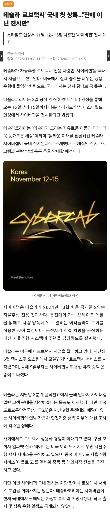
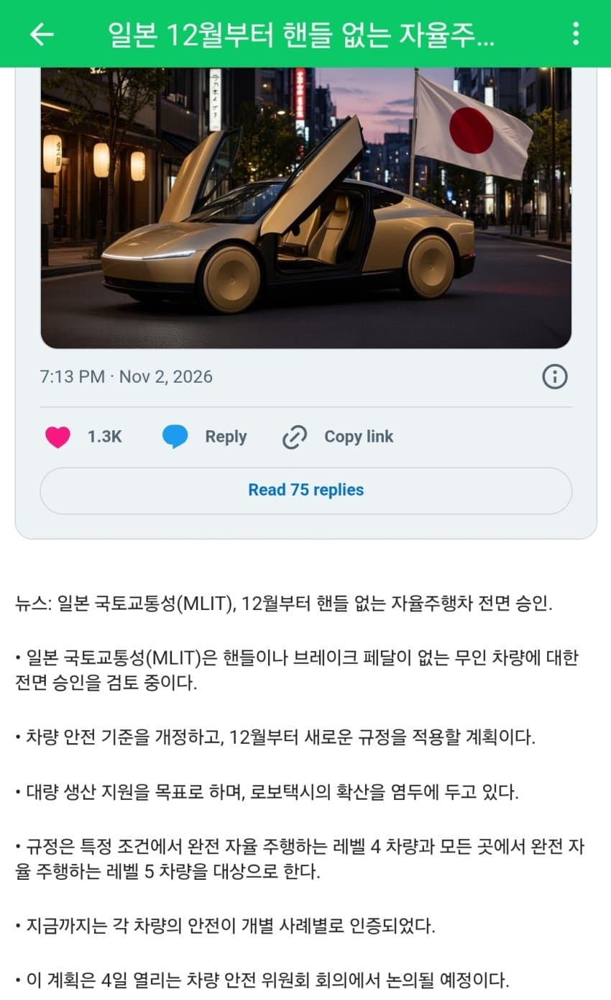

https://zdnet.co.kr/view/?no=20261103112336 테슬라 '로보택시' 국내 첫 상륙…"판매 아닌 전시만"테슬라가 자율주행 로보택시 전용 차량인 '사이버캡'을 국내서 처음으로 선보인다. 미국에서 실제 승객을 태우는 상용 운행에 돌입한 차량으로, 국내에서는 전시 형태로 공개된다.테슬라코리아는 3일 공식 엑스(X·옛 트위터) 계정을 통해 오는 12일부터 15일까지 나흘간 경기도 ...zdnet.co.kr'전시'만 ^^ 출시 및 운행 일정 ^무^ 아 대한민국 그저 대단하다!!!!!!!! 출처: 특이점이 온다 갤러리 [원본 보기]